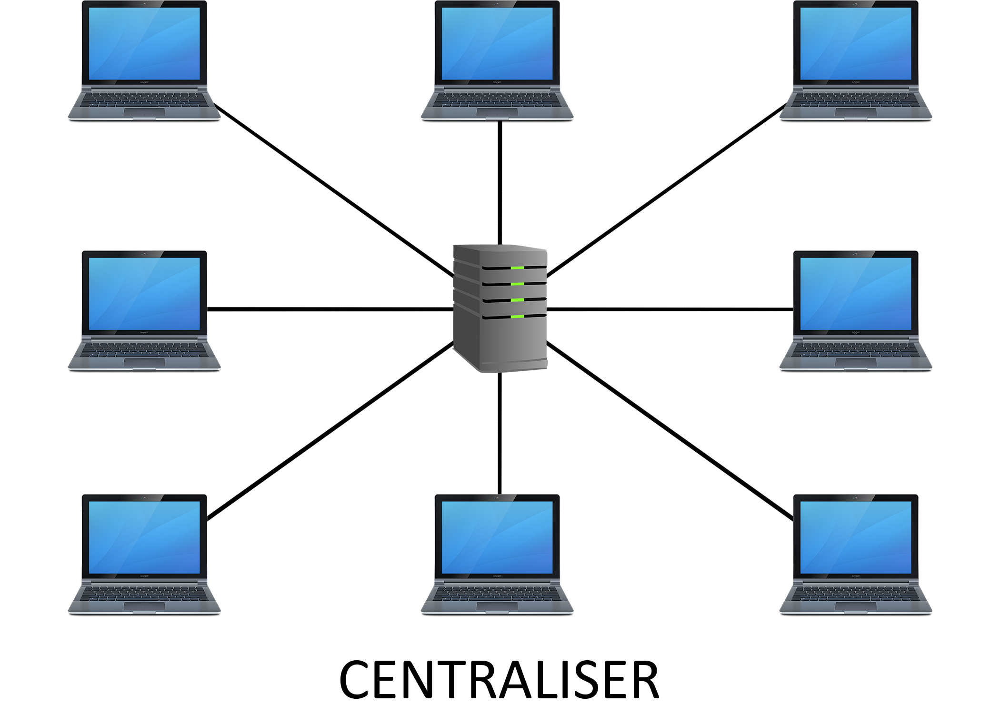
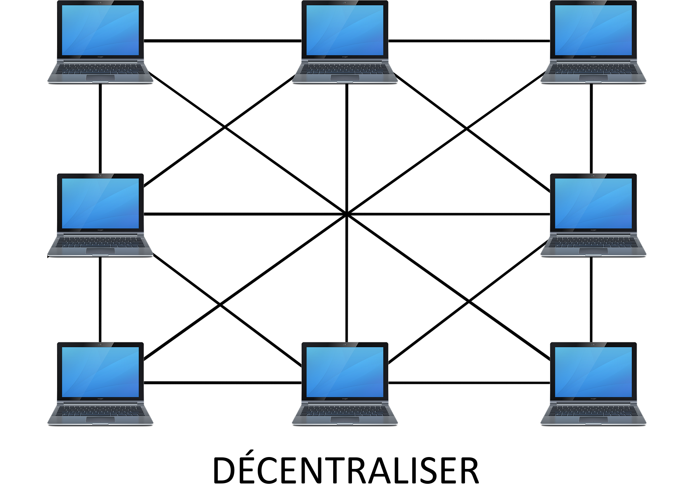

Le Web 3.0
Qu'est-ce que le Web 3.0 ?
Le Web 3.0 c’est le remplacement des différentes fonctions d’internet par des nouvelles formes décentralisées, que ce soit les bases de données, les serveurs web, les navigateurs web, les noms de domaines, etc...
Mais également la possession des données par les utilisateurs et non plus par les entreprises comme Google ou Amazon. Les utilisateurs seront propriétaires de leurs données et pourront décider de les garder secrètes ou de les vendre.
Le Web 3.0 c’est aussi une conception open-source (code disponible à tout le monde, possibilité pour tout le monde d’y participer).
La décentralisation
Pour comprendre tout ça, il faut comprendre ce qu'est la décentralisation.
La décentralisation c'est le fait qu'il n'y a plus aucune autorité centrale lorsqu'on doit publier quelque chose sur internet.
Par exemple : si on poste une vidéo sur YouTube, YouTube décide si oui ou non la vidéo pourra être postée, avec la décentralisation, il n'y a plus de pouvoir central et donc plus de point de défaillance unique (donc plus possible d'arrêter internet, plus de censure et de surveillance possible).
-
Dans le Web 1.0 et 2.0, les données sont stockées dans un serveur fixe, notre requête est envoyée au serveur, qui lui, nous renvoie l'information :
 -
Dans le Web 3.0, des fragments de données sont stockées sur des centaines d'ordinateurs différents, on dit alors que chaque ordinateur est un node (noeud en français). On appelle ça le Peer to Peer :

La blockchain
La blockchain est la technologie "racine" du Web 3.0, elle va servir aux utilisateurs à rester propriétaire de leurs contenus (notamment grace aux NFT).
La blockchain est une base de données où on peut enregistrer des transactions d’une personne à une autre.
La blockchain est distribuée, c'est-à-dire que tout le monde en possède une copie, tout le monde peut la consulter, et il n’y a pas d’autorité centrale qui la contrôle, elle est donc décentralisée. Elle est également infalsifiable, personne ne peut la modifier.
Les transactions sont assurées grâce à des consensus de vérification, le plus connu est le Proof of Work. Les transactions sont regroupées dans un bloc, qui est vérifié grâce au consensus.
Le Proof of Work est un système de machines qui vérifie si les transactions des blocs sont correctes, si oui, les blocs sont ajoutés à la blockchain.
Les NFT
NFT signifie Token non fongible.
Un NFT est un bien numérique, il est stocké dans la blockchain, ce qui lui permet d'être unique et
traçable.
Un NFT pourrait servir à acheter un skin dans un jeu vidéo, mais surtout de le posséder, et pourrait permettre au joueur de le revendre. Un NFT pourrait également permettre d'acheter une oeuvre d'art unique et infalsifiable.
Mais il y a d'autres utilités possibles, comme l'identité sous forme de NFT (carte d'identité), il serait donc impossible de la falsifié.
Le protocole IPFS
IPFS veut dire InterPlanetary File System, c’est un réseau distribué, il a pour ambition de remplacer le web qu’on connaît par un web décentralisé.
IPFS a été créé par Juan Benet et lancé en 2015.
Les problèmes du Web 3.0
Le problème du Web 3.0 c'est qu'il est impossible de censurer, donc une vague de contenue inappropriée pourrait potentiellement arriver.
Il est également encore assez difficile d'utilisation pour le grand public (notamment à cause de la blockchain).